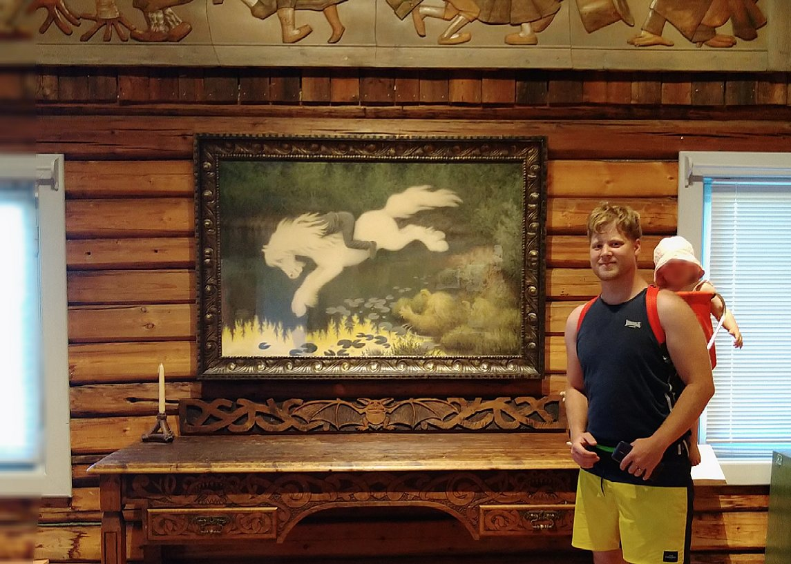
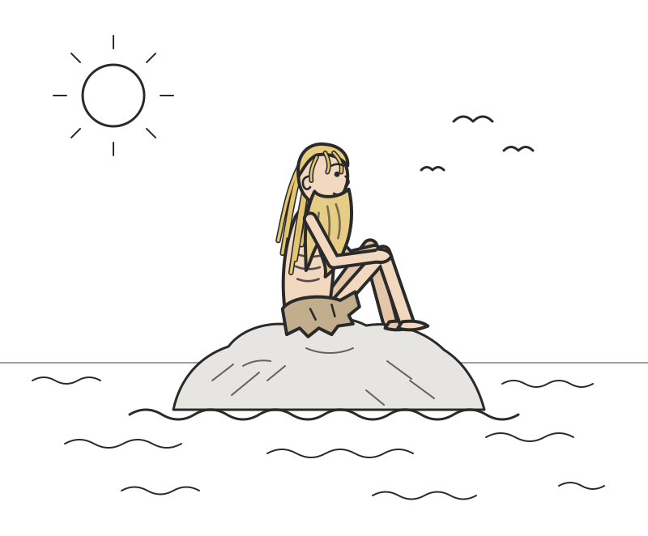

Om Mig

Välkommen!
Jag är en snickare och familjefar bosatt i nordvästra Skåne.
Denna sida är en kort presentation av mig själv, min bakgrund, yrkesliv och engagemang i samhället.
Bakgrund & Familj
Född 1992 och uppvuxen i Hultsfred. Jag blev bror som 16-åring. 2022 flyttade jag till Skåne tillsammans med min fru och våra då tre döttrar. Nu har vi fyra döttrar.
Lynne
Som person är jag vänlig, reflekterande och arbetsam.
"Det är ingenting att be för. Bara spotta i nävarna och börja arbeta" är min generella inställning till livet.
Fritid
Jag uppskattar naturen, gärna ihop med familjen. Att läsa något smalt på biblioteket. Slöjda är roligt. Att sitta ner och diskutera diverse ämnen med goda vänner över något starkt uppskattar jag mycket.
Småländsk filosofi
"Sätter du en smålänning på en öde klippa i havet skaver han sig mätt, och giver du honom en get bliver han rik."

Yrke och Engagemang
Yrkesliv
Jag är certifierad snickare och utbildad betongarbetare med erfarenhet av både små och stora projekt.
Engagemang
Lokalsamhället och demokratin är viktiga för mig. Rätten att få tycka, tänka och rösta fritt är en grundläggande princip som jag är redo att försvara.
- Rösträknare: Tjänstgjort vid 5 val.
- Förtroendeuppdrag: Valnämndsordförande i kyrkoförsamlingen.
"Svenska kyrkan är en plats för reflektion och gemenskap."